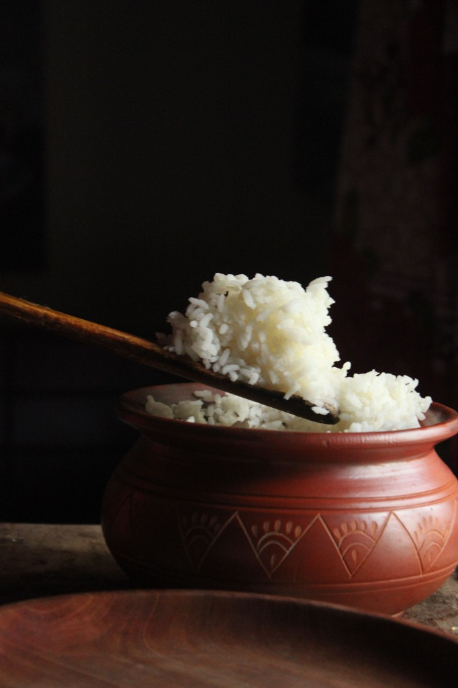

Rice (Oryza sativa)
First Cultivated: ~8000 BCE
Optimal Climate: Warm, humid subtropical to tropical
Water Requirement: 30 to 50 inches annually (often flooded)
Rice domestication in the Yangtze basin transformed East Asian settlement patterns. Wet-rice paddies support dense populations and shaped communal labor systems. Steamed rice, noodles, and fermented products remain the caloric core of many East Asian diets.